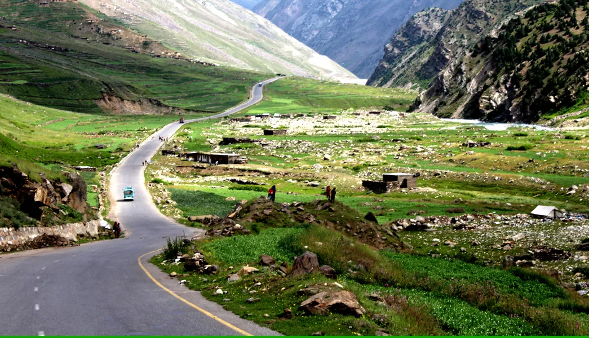

<div class="portfolio-single-load clearfix">
    <div class="custom-full-width-box">
        <div class="custom-container">
            <div class="custom-row align-items-center">
                <div class="custom-image-column">
                    
                </div>
                <div class="custom-text-column">
                    <h2 class="custom-heading">Chilas</h2>
                    <p class="custom-paragraph">
                        Chilas, situated along the mighty Indus River in Gilgit-Baltistan, serves as a gateway to the majestic peaks of the Karakoram Range. With a population of approximately 20,000 people, Chilas boasts ancient rock carvings dating back thousands of years, offering fascinating insights into the region's rich cultural heritage. The town also offers stunning views of rugged mountains and serene riverside landscapes, making it an ideal stopover for travelers along the Karakoram Highway.
                    </p>
                </div>
            </div>
        </div>
    </div><!-- .custom-full-width-box end -->

</div><!-- end single-project -->
